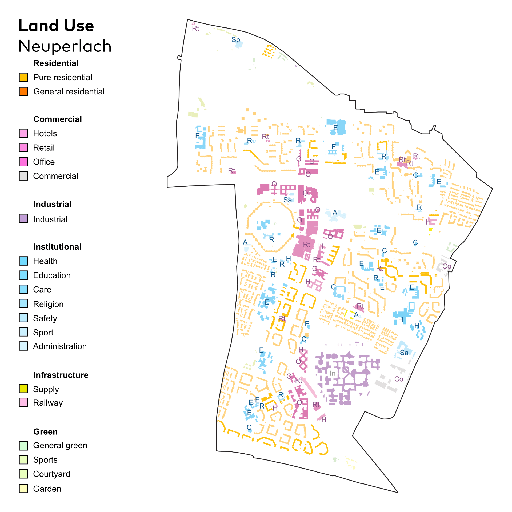

New European Bauhaus
Forschungsprojekt (TUM) 2024
Creating NEBourhoods Together
⬤ Das Circular Neuperlach Projekt analysiert die Umwandlung großer, monofunktionaler Bürogebäude
in München-Neuperlach in zirkuläre und gemeinwohlorientierte Quartiersentwicklung. Basierend auf
Literaturforschung, Expert:inneninterviews und Co-Creation-Workshops wurde eine Circular
Transformation Roadmap entwickelt, die Stakeholder aus Immobilienwirtschaft, Verwaltung, Planung
und Zivilgesellschaft in frühen Planungsphasen zusammenbringt.
Die Methodologie verbindet drei Analyseebenen: übergreifende Megatrends, nachbarschaftliche
Bedarfe und Ressourcenpotenziale sowie Gebäudequalitäten. Das „Circular Uses"-Framework
(Weiterbetrieb, Umnutzung, Intensivnutzung, Mehrfachnutzung) priorisiert höhere
Zirkularitätsebenen. Die Urban Transformation Office (UTO) fungiert als agile Institution für
prozessuale Moderation zwischen privaten und öffentlichen Akteuren.
Schlüsselergebnisse zeigen, dass interdisziplinäre Zusammenarbeit, regulatorische Flexibilität
und innovative Finanzierungsmodelle zentral für Transformation innerhalb planetarer Grenzen
sind. Die Roadmap ist als transferierbarer Prototyp konzipiert für andere europäische
Nachbarschaften.
⬤ The Circular Neuperlach project analyzes the conversion of large, monofunctional office
buildings in Munich-Neuperlach into circular and public welfare-oriented neighborhood
development. Based on literature research, expert interviews, and co-creation workshops, a
Circular transformation roadmap was developed that brings together stakeholders from the real
estate industry, administration, planning, and civil society in the early planning phases.
The methodology combines three levels of analysis: overarching megatrends, neighborhood needs
and resource potential, and building qualities. The “Circular Uses” framework (continued
operation, conversion, intensive use, multiple use) prioritizes higher levels of circularity.
The Urban Transformation Office (UTO) acts as an agile institution for process moderation
between private and public actors.
Key findings show that interdisciplinary collaboration, regulatory flexibility, and innovative
financing models are central to transformation within planetary boundaries. The roadmap is
designed as a transferable prototype for other European neighborhoods.
Prof. Dr.-Ing. W. Lang
Dipl.-Ing. J. Staudt
Dipl.-Ing.
C. Schade